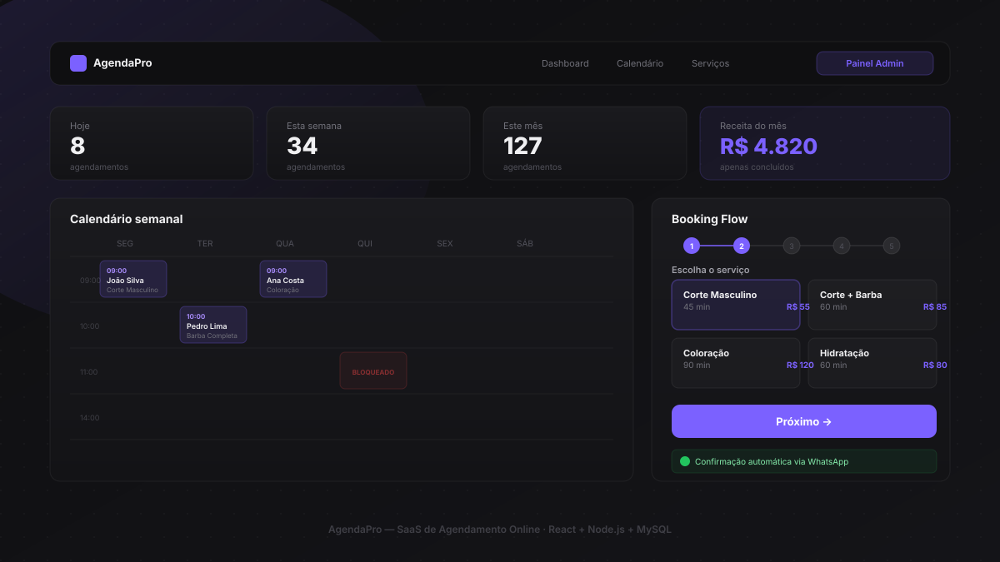

AgendaPro

Sobre o Projeto
O AgendaPro é uma plataforma SaaS completa de agendamento online, desenvolvida para salões, barbearias, clínicas e prestadores de serviço em geral. O cliente agenda em 5 passos guiados diretamente pelo navegador, sem precisar criar conta.
O painel administrativo oferece calendário semanal com drag-and-drop para reagendamento, exportação CSV, bloqueio de horários e estatísticas em tempo real. O sistema envia confirmações e lembretes automáticos via WhatsApp.
Funcionalidades
- Booking flow em 5 steps com animações GSAP e transições suaves
- Seleção de serviço, profissional, data e horário em tempo real
- Prevenção de double booking com transações MySQL (SELECT FOR UPDATE)
- Painel admin com calendário drag-and-drop e bloqueio de horários
- Notificações automáticas via WhatsApp (confirmação + lembrete 1h antes)
- Exportação de agendamentos em CSV compatível com Excel
- PWA — instalável como app no celular
- Arquitetura white-label: troca de cliente em um único arquivo de configuração
- Autenticação JWT com expiração e redirecionamento automático
- Landing page com cursor animado, pricing, FAQ e scroll suavizado (Lenis)
Tecnologias
Como foi feito
Frontend: React 18 com Vite, React Router v6 e @dnd-kit para o calendário drag-and-drop. Cada step do booking flow tem animação de entrada com GSAP. O sistema de toast usa Context API para feedback em toda a aplicação.
Backend: Node.js com Express, validação com express-validator e autenticação JWT. Todas as queries usam parâmetros para prevenir SQL injection. O slot de disponibilidade é calculado em tempo real cruzando agendamentos e bloqueios.
Banco de dados: MySQL 8 com 5 tabelas relacionais. O anti-double-booking usa transação com SELECT FOR UPDATE para garantir consistência mesmo sob requisições simultâneas.
WhatsApp: Integração com Evolution API para envio de confirmações imediatas e lembretes automáticos 1 hora antes via node-cron. Se a API não estiver configurada, o sistema funciona normalmente sem notificações.